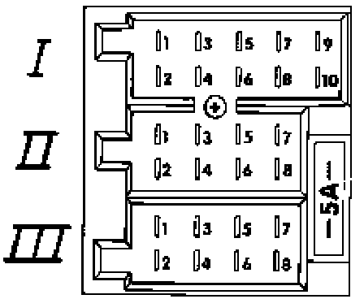

Multi-Pin Connector III, T8, 8-Pin, Black
Radio connector (Deluxe and Premium), terminal identification
Multi-pin connector III, T8, 8-pin, black

1 - Alarm system connection, to alarm system control module -J284-
2 - Open
3 - Open
4 - Ignition key on/off connection (from ignition/starter switch (D), terminal SU)
5 - Switched positive voltage (B+) for amplified roof antenna (GTI and Jetta GLX only)
6 - Radio illumination, terminal 58b
7 - Battery positive voltage (B+), terminal 30 (from fuse -S22-)
8 - Ground (GND), terminal 31